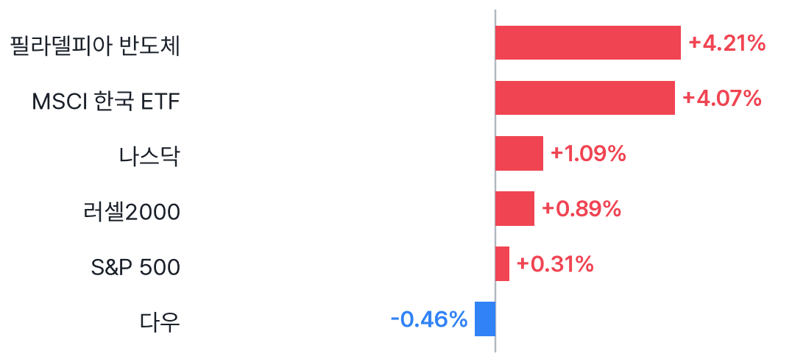
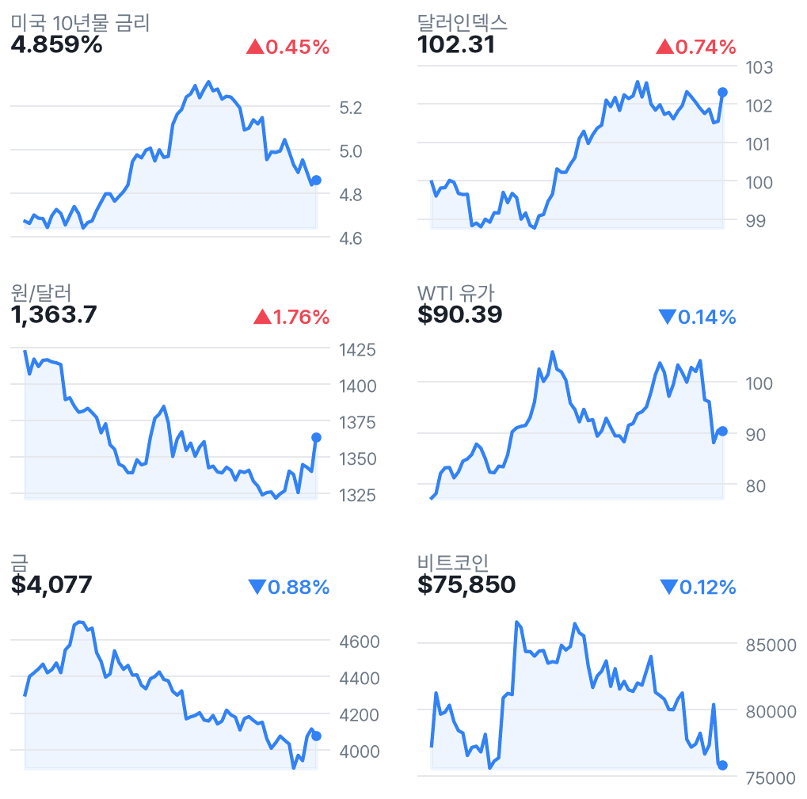
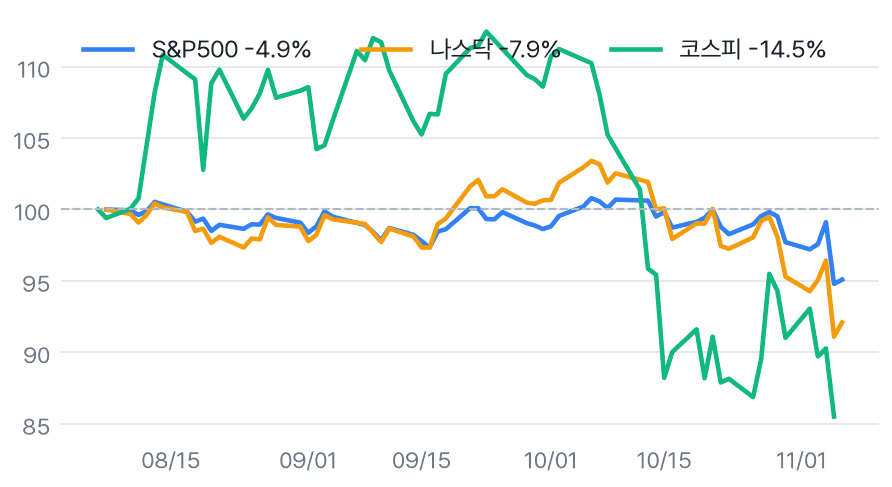

반도체 4.21%↑, AI주 저가 매수에 나스닥 반등
✅ 핵심 요약
- 나스닥 +1.09%·반도체 +4.21%…AI주 저가 매수, 다우는 -0.46%
- AMD +11.04%·TSM +6.33%·마이크론 +5.12%로 반도체 반등 주도
- EWY +4.07%는 국내 증시에 우호적 신호…원/달러 1,363.7원은 부담
- 주간(5일) S&P500 -2.68%·나스닥 -3.37%·반도체 -12.15%
📊 주요 지표
S&P 500
7,376.86
▲0.31%
나스닥
24,579.42
▲1.09%
다우
51,285.73
▼0.46%
필라델피아 반도체
9,390.25
▲4.21%
VIX
25.64
▼9.01%
미국 10년물
4.859%
▲0.45%
원/달러
1,363.7
▲1.76%
달러인덱스
102.31
▲0.74%
WTI
$90.39
▼0.14%
금
$4,077
▼0.88%
비트코인
$75,850
▼0.12%
EWY(한국 ETF)
$137.01
▲4.07%
🧭 시장 해석
미국장은 AI·반도체 저가 매수로 반등했지만 다우는 하락했다. 수집된 CNBC·뉴스핌 기사 제목도 저가 매수를 반등 배경으로 지목했다. 지수·업종 간 차이를 보면 전면적 위험선호 회복보다는 급락 업종의 일부 되돌림이라는 해석이다.
EWY +4.07%와 반도체 반등은 국내장에 우호적이나 원/달러 상승과 미 10년물 4.859%는 부담이다. 고용 호조라는 기사 제목은 확인됐지만 실제 발표값은 확보하지 못해 지표의 서프라이즈 규모는 판단을 보류한다. 오늘 국내장은 휴장이다.
하루 반등과 주간 손실을 구분
반도체는 하루 +4.21%에도 최근 5일 -12.15%, 마이크론은 하루 +5.12%에도 5일 -22.01%다. VIX도 하루 -9.01%지만 5일 +32.03%다. 급락 이후 가격 회복은 확인됐으나 변동성의 정상화까지 확인된 것은 아니다.
국내 연결: EWY와 환율의 엇갈림
네이버 기준 국내 직전 마감은 코스피 5,059.69(-6.02%), 코스닥 644.27(-5.03%)다. Yahoo 국내 지수는 전일보다 오래된 날짜여서 제외했다. EWY 상승을 국내 지수의 같은 폭 상승으로 해석할 수는 없다. 원/달러는 수집 시세로, 국내 주간시장 종가와 구분해야 한다.
📈 차트
미국 주요 지수 등락률

2026-11-06 미국 정규장 종가 기준 · EWY는 코스피 선행 지표로 참고
미국 빅테크·대형주 히트맵

타일 크기 = 시가총액, 색 = 등락률 (빨강 상승 · 파랑 하락)
미국 섹터 ETF 등락률

SPDR 섹터 ETF + 반도체(SMH)
금리·환율·원자재 (3개월)

우측 상단 = 전일 대비
3개월 추세 비교 (시작=100)

미국 vs 한국 지수 흐름
🏦 애널리스트 · 리서치
- QCOM — JP모건 $215→$200·UBS $185→$180최근 수집 의견은 모두 Neutral 유지·목표가 하향이다. 주가 +5.52% 반등과 별개로 신중한 시각이 남아 있다는 의견.
- COST — JP모건 목표가 $1,015→$1,150Overweight를 유지한 채 목표가를 상향했다는 의견. 당일 주가 -1.13%와는 방향이 달랐다.
- MA — Freedom Broker Buy→Hold수집값에는 목표가 $620→$725 상향도 함께 기록됐다. 의견 하향과 목표가 상향이 병기돼 원문 확인이 필요한 항목.
-
교보증권은 ‘더 강해진 주주환원!’이라는 제목의 리포트에서 주주환원 강화를 강조한 의견. 세부 수치는 원문 확인 필요.
미국 대형주 의견·목표가 변경 7건 (Yahoo)
- 의견 하향MA · Freedom BrokerBuy → Hold · 목표가 $620 → $725 · 11/06 11:15 KST
- 목표가 상향COST · JP MorganOverweight · 목표가 $1,015 → $1,150 · 11/06 08:27 KST
- 목표가 하향QCOM · UBSNeutral · 목표가 $185 → $180 · 11/06 09:08 KST
- 목표가 하향QCOM · JP MorganNeutral · 목표가 $215 → $200 · 11/06 07:51 KST
- 목표가 하향QCOM · TD CowenBuy · 목표가 $200 → $185 · 11/06 05:53 KST
- 목표가 하향QCOM · RosenblattBuy · 목표가 $235 → $205 · 11/06 04:30 KST
- 목표가 하향QCOM · BarclaysUnderweight · 목표가 $180 → $150 · 11/06 04:02 KST
국내 종목분석 리포트 30건 (네이버 리서치)
-
한화투자증권 · 2026-11-06
-
신한투자증권 · 2026-11-06
-
하나증권 · 2026-11-06
-
하나증권 · 2026-11-06
-
하나증권 · 2026-11-06
-
하나증권 · 2026-11-06
-
하나증권 · 2026-11-06
-
하나증권 · 2026-11-06
-
하나증권 · 2026-11-06
-
하나증권 · 2026-11-06
-
하나증권 · 2026-11-06
-
하나증권 · 2026-11-06
-
하나증권 · 2026-11-06
-
DS투자증권 · 2026-11-06
-
DS투자증권 · 2026-11-06
-
DS투자증권 · 2026-11-06
-
유안타증권 · 2026-11-06
-
유안타증권 · 2026-11-06
-
DS투자증권 · 2026-11-06
-
SK증권 · 2026-11-06
-
교보증권 · 2026-11-06
-
유진투자증권 · 2026-11-06
-
교보증권 · 2026-11-06
-
미래에셋증권 · 2026-11-06
-
미래에셋증권 · 2026-11-06
-
교보증권 · 2026-11-06
-
대신증권 · 2026-11-06
-
대신증권 · 2026-11-06
-
교보증권 · 2026-11-06
-
대신증권 · 2026-11-06
국내 투자전략 리포트 8건 (네이버 리서치)
-
유진투자증권 · 2026-11-06
-
신한투자증권 · 2026-11-06
-
하나증권 · 2026-11-06
-
한화투자증권 · 2026-11-06
-
유안타증권 · 2026-11-06
-
유안타증권 · 2026-11-06
-
대신증권 · 2026-11-06
-
대신증권 · 2026-11-06
국내 시황정보 리포트 8건 (네이버 리서치)
-
신한투자증권 · 2026-11-06
-
신한투자증권 · 2026-11-06
-
유안타증권 · 2026-11-06
-
유안타증권 · 2026-11-06
-
유안타증권 · 2026-11-06
-
신한투자증권 · 2026-11-06
-
신한투자증권 · 2026-11-06
-
iM증권 · 2026-11-06
국내 경제분석 리포트 2건 (네이버 리서치)
-
키움증권 · 2026-11-06
-
키움증권 · 2026-11-06
📰 주요 뉴스
-
반등이 기술주 밖으로 확산되는지가 지속성 판단의 관건CNBC
-
AI 투자 확대의 자금조달 비용과 신용위험을 점검할 사안MarketWatch
-
주말 이후 반등의 연속성과 정책 불확실성 점검CNBC
미국·글로벌 헤드라인 18건
-
WSJ Markets · 11/07 06:56
-
WSJ Markets · 11/07 06:55
-
WSJ Markets · 11/07 06:53
-
WSJ Markets · 11/07 06:53
-
MarketWatch · 11/07 06:45
-
MarketWatch · 11/07 06:45
-
Reuters · 11/07 06:42
-
CNBC · 11/07 06:40
- Data centers run on debt. That was a problem for bonds this year — and it’s only going to get worse.MarketWatch · 11/07 06:37
- Nvidia, AMD and other chip stocks rebound — but is relief from the ‘violent’ selloff only temporary?MarketWatch · 11/07 06:24
-
WSJ Markets · 11/07 06:24
- Nasdaq rebounds 1% following worst session in 18 months as traders snap up tech shares: Live updatesCNBC · 11/07 06:22
-
WSJ Markets · 11/07 06:22
-
CNBC · 11/07 06:15
-
MarketWatch · 11/07 06:15
-
MarketWatch · 11/07 06:15
-
CNBC · 11/07 06:12
-
The New York Times · 11/07 06:11
국내 헤드라인 18건
-
뉴시안 · 11/07 06:36
-
연합뉴스 · 11/07 06:33
-
글로벌이코노믹 · 11/07 06:30
-
SBS 뉴스 · 11/07 06:21
-
뉴스핌 · 11/07 06:21
-
연합인포맥스 · 11/07 06:16
-
한국경제TV · 11/07 06:15
-
뉴시스 · 11/07 06:13
-
블루밍비트 · 11/07 06:05
-
파이낸셜뉴스 · 11/07 06:01
-
연합뉴스 · 11/07 06:01
-
매일경제 · 11/07 06:00
-
연합뉴스 · 11/07 06:00
-
연합뉴스 · 11/07 06:00
-
조세일보 · 11/07 06:00
-
머니투데이 · 11/07 06:00
-
YTN · 11/07 05:41
-
블루밍비트 · 11/07 04:33
애널리스트 관련 헤드라인 12건
-
MarketBeat · 11/07 06:35
-
Quantisnow · 11/07 05:45
-
MarketBeat · 11/07 04:51
-
MarketBeat · 11/07 03:44
-
MarketBeat · 11/07 03:36
-
Yahoo Finance · 11/07 03:14
-
Quartz · 11/07 03:02
-
MarketBeat · 11/07 01:43
-
Benzinga · 11/07 01:33
-
MarketBeat · 11/07 00:44
-
MarketBeat · 11/07 00:40
-
MarketBeat · 11/07 00:40
🗓️ 일정
경제지표·이벤트 (KST)
- 22:30🇺🇸 미국 Average Hourly Earnings m/m11/06 · 중요도 높음 · 예상 0.3% · 이전 0.1%
- 22:30🇺🇸 미국 Non-Farm Employment Change11/06 · 중요도 높음 · 예상 65K · 이전 29K
- 22:30🇺🇸 미국 Unemployment Rate11/06 · 중요도 높음 · 예상 4.2% · 이전 4.2%
- 00:00🇺🇸 미국 Prelim UoM Consumer Sentiment11/07 · 중요도 중간 · 예상 48.1 · 이전 46.3
- 00:00🇺🇸 미국 Prelim UoM Inflation Expectations11/07 · 중요도 중간 · 이전 4.7%
- 01:00🇯🇵 일본 BOJ Gov Ueda Speaks11/07 · 중요도 높음
어젯밤 장 마감 후 실적 (미국)
- HMC Honda Motor Company, Ltd.시간미정시총 $47.0B · EPS 예상 - · 시간외 ▲0.00%
- UI Ubiquiti Inc.시간미정시총 $31.1B · EPS 예상 $3.82 · 시간외 ▼0.00%
다음 미국 세션 실적 예정
- KKR KKR & Co. Inc.장전시총 $88.2B · EPS 예상 $1.41
- CEG Constellation Energy Corporation장전시총 $84.9B · EPS 예상 $3.90
- B Barrick Mining Corporation장전시총 $66.4B · EPS 예상 $0.74
- OXY Occidental Petroleum Corporation장후시총 $56.3B · EPS 예상 $1.43
- FERG Ferguson Enterprises Inc.장전시총 $45.6B · EPS 예상 $3.28
- SKYD Skydance Corporation장후시총 $41.1B · EPS 예상 $0.11
- TTWO Take-Two Interactive Software, Inc.장후시총 $39.9B · EPS 예상 $0.49
- IX ORIX Corporation장전시총 $39.1B · EPS 예상 -
- RKLB Rocket Lab Corporation장후시총 $28.9B · EPS 예상 ($0.05)
- BAP Credicorp Ltd.장후시총 $27.6B · EPS 예상 $7.51
- ROIV Roivant Sciences Ltd.장전시총 $26.5B · EPS 예상 ($0.52)
- CIB Grupo Cibest S.A.장후시총 $22.0B · EPS 예상 $2.87
👀 체크포인트
- 주말AI·데이터센터 정책 뉴스와 달러 흐름 점검; 오늘 국내장 휴장
- 11/09 미국 장전KKR·CEG 실적 예정 — 컨센서스 EPS 각각 $1.41·$3.90
- 11/10 새벽·오전미국 11/09 장후 OXY·TTWO·RKLB 실적 예정, 발표 시각은 미확정